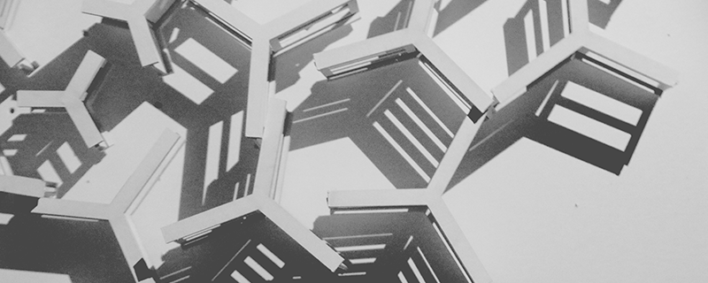
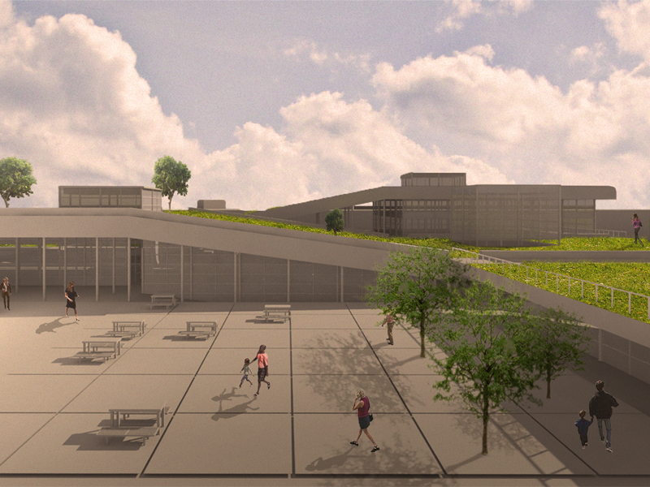
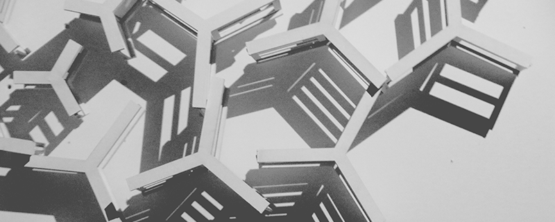
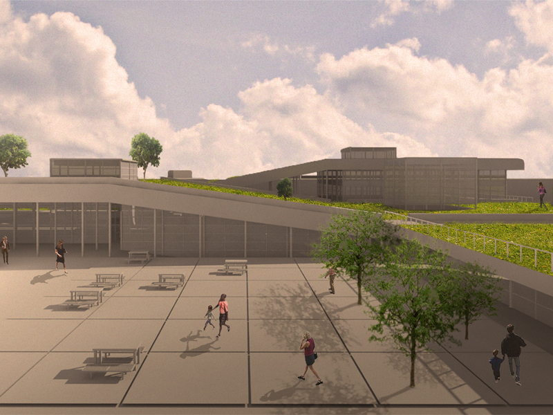
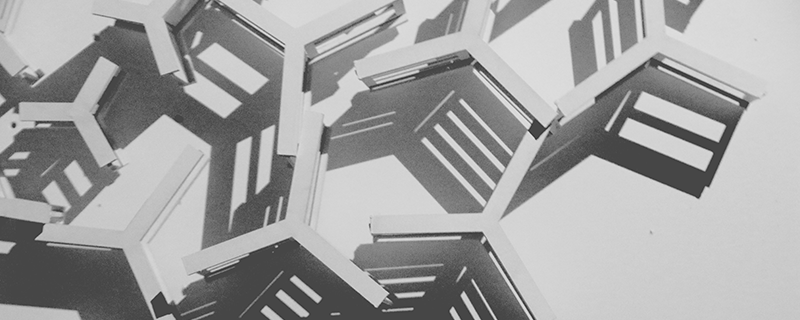
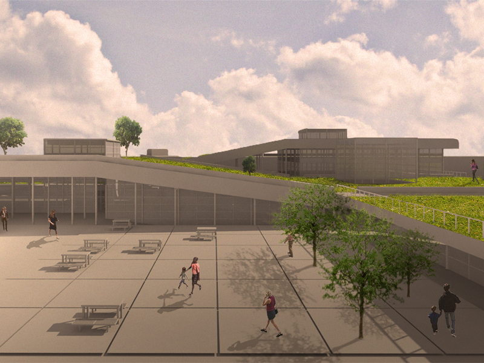
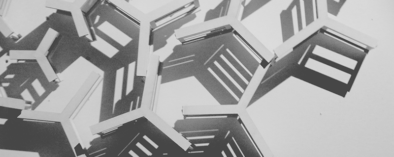
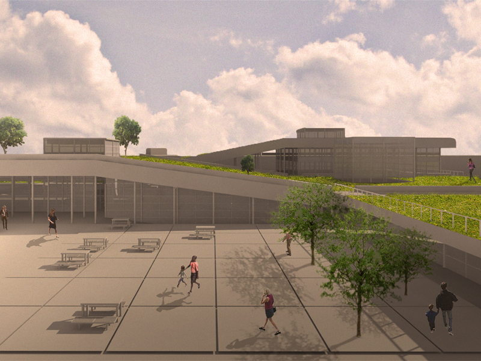
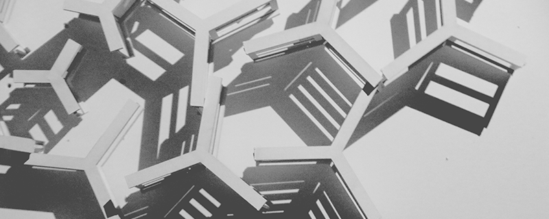
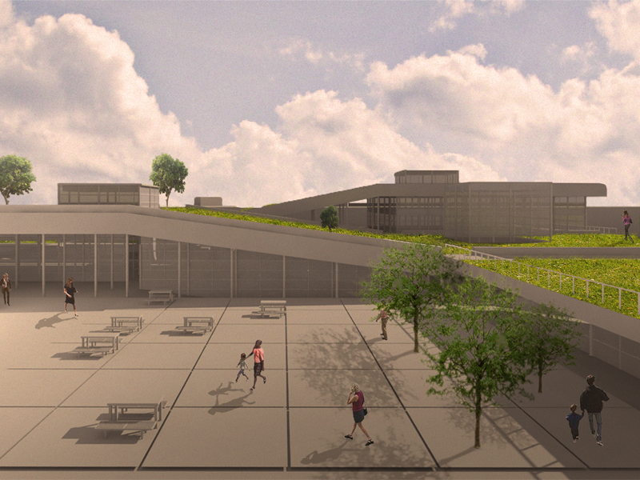
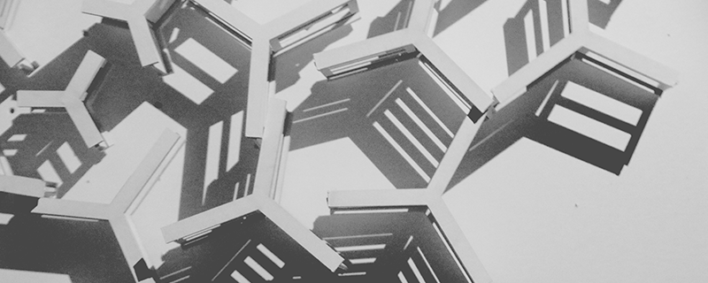
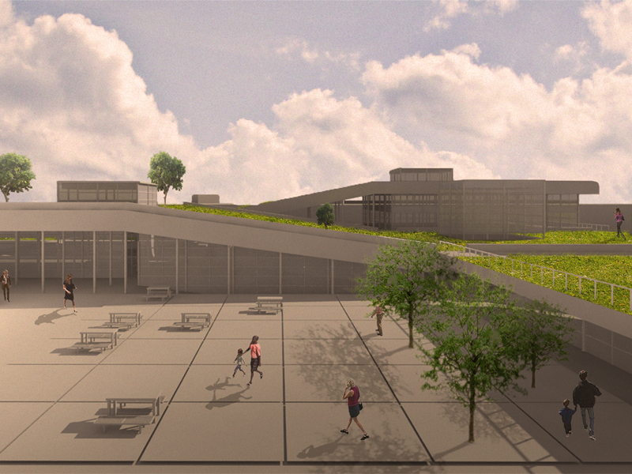

I was born in Zamora, Ecuador, a town of two thousand people in the Amazon basin. I am a recent graduate from Cornell University where I received both a Bachelor of Architecture with a concentration in Architectural Theory and a Bachelor of Science in Urban and Regional Studies.
I have worked at Landon Bone Baker Architects in Chicago, IL; Adrian Smith and Gordon Gill Architecture in Chicago, IL; Rafael Vinoly Architects in New York, NY; Cayuga Waterfront Trail Initiative in Ithaca, NY; Friends of Stewart Park in Ithaca, NY; and Wharton Studio Museum in Ithaca, NY.
I can be reached at jasonapolo@gmail.com
2016
Bachelor of Architecture with Concentration in Theory of Architecture
Bachelor of Science in Urban and Regional Studies
June 2016 - Present
Design Intern
I design renovations and new constructions in Stewart Park and the Cayuga Waterfront Trail using AutoCAD, Rhino and Adobe software. I also produce marketing and branding material for both organizations. I help organize events to then meet and motivate new donors to give to both nonprofits. I upkeep the organizations' websites using HTML and CSS and I manage their social media presence through Facebook, E-News and Instagram.
February 2016 - Present
Editor
I interview professors and graduate students on topics of interdisciplinary design. I transcribe and edit my and others' interviews. I provide extensive feedback on the topics, themes, and visual design of the publication.
September 2014 - December 2014 and June 2015 - August 2015
Design Intern
I produced highly detailed publication drawings for New York University's Abu Dhabi campus using Rhino, AutoCAD and Adobe Illustrator. I designed large-scale billboard signage for NYU Abu Dhabi. I created concept drawings for project proposals. I edited and printed books for marketing submissions.
June 2011 - August 2011
Design Intern
I worked on two international building projects using AutoCAD, Rhinoceros 4, and Revit. I organized architectural plans and built physical models for design competitions.
June 2010 - August 2010
Design Intern
With a group of 8 interdisciplinary designers, we founded “Shadelab” to raise awareness about sustainable design in architecture and neighborhood planning. I served as spokesman in presentations, wrote documentation documents and designed promotional materials to spread knowledge of our research.
Rhinoceros 5, Grasshopper, Vray, AutoCAD 2016, Revit, SketchUp, and Ecotect Analysis.
Adobe Photoshop, Illustrator, and InDesign.
General knowledge of HTML, CSS, Arduino, and Processing.
CNC milling, 3D printing, laser cutting, and ceramic slip casting.
Fluent in English and Spanish.
Conversational French and Italian.
Choral singing, illustration, and training in taekwondo.
2016
I co-authored its first and second publications on topics of interdisciplinary design at Cornell University.
2016
I was featured in its eighth publication for my design proposal “Interim Urbanism”.
2016
I was featured in the exhibition "Ten Semesters and Beyond" for my design proposal "Branching Truss System".
2014
I was featured in David Eugin Moon's lecture "A Brief History of Temporary Architecture" for my design proposal "Interim Urbanism".
jasonapolo@gmail.com
4705 W Le Moyne St
Chicago, IL 60651